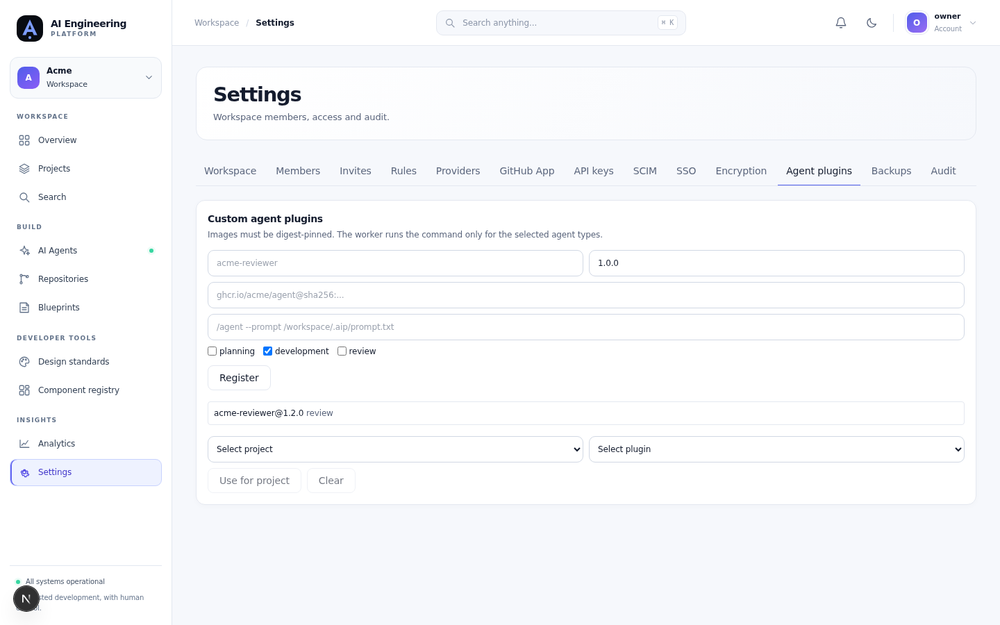

Agents, models and BYOK
The platform is model-agnostic. A project chooses which agents and providers it may use; the platform records the choice on every run.
Supported execution modes
| Mode | Use |
|---|---|
| Hosted provider | Anthropic or an OpenAI-compatible endpoint |
| Command backend | A local or self-hosted agent command |
| Custom agent plugin | A digest-pinned OCI image with a defined command |
The provider and model are recorded on the run, together with token usage and cost.
Configure a provider
- Open Settings → Providers.
- Add the provider and credentials.
- Choose the default model for planning, development and review, or set it per project.
- Test the connection.
Credentials are encrypted and never shown again after saving. Rotate them from the same screen.
Custom agent plugins
A plugin is an OCI image pinned by digest:
ghcr.io/acme/agent@sha256:...The worker runs the image's command only for the project and run types where the plugin is allowed. Signed images can be required; an unsigned image is rejected when cosign verification is on.

Register a digest-pinned image, choose the run types and attach it to a project.
Bring your own key (BYOK)
Organisations can supply their own KMS key for envelope encryption:
- Open Settings → Encryption.
- Add the KMS key and region.
- Verify the key.
- Enable BYOK for the workspace.
Existing data uses data keys wrapped by the organisation key. Rotation re-wraps those keys in an operator-run job; verify the rotation runbook before changing the key. Revoking a key makes encrypted fields unreadable, so keep a recovery procedure.
Regions
A workspace has a region label. Requests routed to the wrong region are rejected with 421 when the regional guard is enabled. Multi-region data planes are an operator concern, not a per-task setting.
MCP tools
Projects can declare trusted MCP servers. The sandbox starts only the declared servers, with the project's allowlist. A tool that is not declared is unavailable to the run.
Limits
- A provider key is scoped to the workspace.
- A plugin must be digest-pinned; tags are not accepted.
- Model choices are constrained by the project's allowed list.
- Budgets are enforced by the worker between phases.